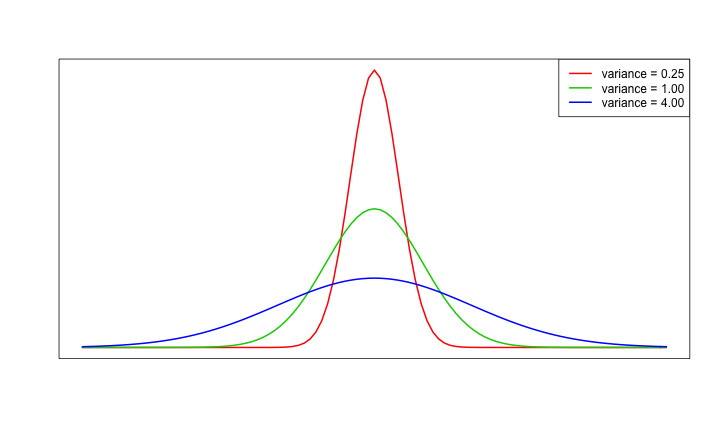

- 敘述統計
- 機率論
- 假設檢定
- 信賴區間
- 統計模型
Statistics
Wush Wu
國立台灣大學
課程大綱
課程目標
- 具備和統計學家溝通的能力
- 理解統計科學要解決的問題
- 理解統計科學的名詞與其背後的含義
- 理解統計學家解決問題的方式
限制聲明
- 統計是一門需要時間學習的專業技能。同學若想要學習專業的統計知識，仍然需要找專門介紹統計的課程
- 本課程的目的在讓同學透過R來「體驗」統計的思維，以增加未來和統計學家的溝通能力
關於練習
- 請使用R 搭配swirl課程：RStatistics進行
敘述統計
何謂敘述統計？
- 描述數據的方法
- 圖形化
- 數值指標
數值系統
- 名目尺度（數字之間無意義）
- 順序尺度（數字的順序有意義）
- 區間尺度（數字的加減有意義）
- 比例尺度（數字的倍數有意義）
- 類別型變數：名目尺度與順序尺度
- 數值型變數：區間尺度與比例尺度
範例一
- 請問下列各欄位屬於哪種數值系統？
| 核備文號 | X座標 | Y座標 | 通報時間 | 施工單位 |
|---|---|---|---|---|
| 102002163 | 305380.1 | 2771131 | 1031030102858 | 台電輸變電 |
| 102002875 | 304886.2 | 2770306 | 1031028080916 | 台電輸變電 |
| 102004900 | 302735.8 | 2770178 | 1040428094229 | 台電輸變電 |
| 103000673 | 307602.7 | 2764702 | 1040819162541 | 新工處 |
| 104000052 | 305401.1 | 2772324 | 1040912082416 | 新工處 |
| 104000101 | 306300.3 | 2769063 | 1041218085247 | 新工處 |
數值系統間的互換
X座標+Y座標=>行政區
| X座標 | Y座標 | 行政區 | 施工位置 |
|---|---|---|---|
| 305380.1 | 2771131 | 松山 | 敦化南路1段68號前分隔島綠帶 |
| 304886.2 | 2770306 | 大安 | 大安路1段116巷於復興南路一段與仁愛路四段27巷間 |
| 302735.8 | 2770178 | 中正 | 紹興南街17~21-3號與仁愛路1段1~19號 |
| 307602.7 | 2764702 | 文山 | 木新路一段，南起指南路一段，北至木柵路三段。 |
| 305401.1 | 2772324 | 松山 | 松山信義區 |
| 306300.3 | 2769063 | 松山 | 1.松山及信義區8米以上計畫道路 |
| 2.其它交辦指定之行政區 |
類別型變數的圖形化(長條圖)

類別型變數的圖形化（圓形圖）

連續型變數的圖形化(直方圖)

直方圖 v.s. 長條圖
- 長條圖適用於類別型資料，直方圖適用於連續型資料
- 長條圖的bar 之間有間隔，直方圖則是連續
- 長條圖的順序不一定有意義，直方圖的順序有意義
數據指標
- 中心位置
- 散佈程度
數據的中心位置
- 平均數（適用於數值型變數）
- 中位數（適用於數值型變數）
- 眾數（適用於類別型變數）
平均數(mean)
- \(\bar{x} = \frac{1}{N} \sum_{i=1}^N x_i\)
- \(x = \{1, 2, 3, 4, 6\}\) 的平均數為 \(\frac{1 + 2 + 3 + 4 + 6}{5} = 3.2\)
- 總和(sum)、平均與個數
平均數(mean)
- 最小化\(\sum_{i = 1}^N {(x - x_i)^2}\)

平均數(mean)的應用
- 過去三十天，每天網路廣告平均的營業額為50萬
- 平均數常常被當成基準做比較
- 今天的營業額為60萬 ==> 好
- 今天的營業額為40萬 ==> 不好
- 平均數常常被當成基準做比較
- 移動平均
- 處理時間序列（隨著時間不斷延伸的資料）常用的技巧
- 例：股票的周線、月線
- 加權平均
- 每筆資料的重要性不同
移動平均在股票分析的應用

平均數的濫用

中位數(median)
- 觀測值中間的數值
- 50%的數值小於中位數
- 50%的數值大於中位數
- \(x = \{1, 2, 3, 4, 6\}\) 的中位數為 \(3\)
- \(x = \{1, 2, 3, 4, 6, 7\}\) 的中位數為 \(\frac{3 + 4}{2} = 3.5\)
中位數(median)
- 最小化\(\sum_{i = 1}^N {\left\lVert x - x_i \right\rVert}\)

中位數的應用
- 中位數是可以取代大多數平均數的角色
- 中位數比較穩健，不容易受到少數資料的影響
- 中位數的解釋和總和無關
- 台灣每人可支配所得：
- 逐年(100年至103年)平均數：275984, 285939, 293523, 303762
- 逐年(100年至103年)中位數：233527, 243131, 250308, 259926
- 資料來源：行政院主計總處家庭收支調查
眾數(mode)
- 出現次數最多的觀測值
- 可用於類別型變數
- 最小化\(\sum_{i = 1}^N I(x_i != x)\)
- 討論機率論的時候，我們會再更新定義
眾數的應用
- 在分析類別型數據前，常用來探測是否有類別不平衡的狀態
- 預測類別型變數時，眾數是常用的基準
- 點擊率預測，點擊行為的眾數是「無點擊」，約佔99.9%。所以一個比較基準就是：「全部猜不會點」
練習二之一
x1= {1, 10, 2, 3, 7, 1, 7, 8, 1}- 請問
x1的平均數為何？ - 請問
x1的中位數為何？ - 請問
x1的眾數為何？
- 請問
練習二之二
- 把
x1的10改成100後，得到：x2= {1, 100, 2, 3, 7, 1, 7, 8, 1}- 請問
x2的平均數為何？和x1的平均數是否一樣？ - 請問
x2的中位數為何？和x1的中位數是否一樣？ - 請問
x2的眾數為何？和x1的眾數是否一樣？
- 請問
評論
- 平均數、中位數與眾數中，平均數最容易受到特異獨行的樣本影響
練習二之三
- 把
x1的資料全部乘以100後，得到：x3= {100, 1000, 200, 300, 700, 100, 700, 800, 100}- 請問
x3的平均數為何？和x1的平均數乘以100是否一樣？ - 請問
x3的中位數為何？和x1的中位數乘以100是否一樣？ - 請問
x3的眾數為何？和x1的眾數乘以100是否一樣？
- 請問
練習二之四
- 把
x1的資料全部加上1後，得到：x4= {2, 11, 3, 4, 8, 2, 8, 9, 2}- 請問
x4的平均數為何？和x1的平均數+1是否一樣？ - 請問
x4的中位數為何？和x1的中位數+1是否一樣？ - 請問
x4的眾數為何？和x1的眾數+1是否一樣？
- 請問
評論
- 線性轉換後的平均數、中位數、眾數與對平均數、中位數、眾數做相同的線性轉換後結果相同
- 線性轉換的範例
- 改變單位：1元 ==> 1萬元、公分 ==> 公尺
數據的分散程度
- 最大值、最小值與全距(range)
- 平均差(MD, Mean Deviation)
- MAD(Median Absolute Deviation)
- 四分位差(IQR, Interqwuartile Range)
- 變異數與標準差(Variance and standard deviation)
- 變異係數(CV, Coefficient of Variation)
- Quartile coefficient of dispersion
最大值、最小值與全距(range)
- 描述數據分佈的範圍
x1= {1, 10, 2, 3, 7, 1, 7, 8, 1}- 最大值為10
- 最小值為1
- 全距為「最大值-最小值」，為10 - 1 = 9
最大值、最小值與全距的應用
- 了解數據是不是全部都是正數
- 是的話，常常先取log或開根號後再處理
- 範例：網路即時競價的出價預測
- 了解數據的範圍是否合理
- 了解數據的散布行為才能了解數據是否正常
- 出價範圍是否合理
練習三之一
x1,x2,x3,x4如前述- 請問
x1的最大值、最小值與全距為何？ - 請問
x2的最大值、最小值與全距為何？ - 請問
x3的最大值、最小值與全距為何？ - 請問
x4的最大值、最小值與全距為何？
評論
- 全距越大，代表數據的散布程度越大
- 全距容易受到異常資料的影響
- 全距會隨著數據的放大而變大
- 全距不會被數據的平移所影響
平均差(MD, Mean Deviation)
- 差的平均
- \(\frac{1}{n} \sum_{i = 1} ^n {\left\lVert x_i - \bar{x} \right\rVert}\)
練習三之二
x1,x2,x3,x4如前述- 請問
x1的平均差為何？ - 請問
x2的平均差為何？ - 請問
x3的平均差為何？ - 請問
x4的平均差為何？
評論
- 平均差越大，代表數據的散布程度越大
- 平均差容易受到異常資料的影響
- 平均差會隨著數據的放大而變大
MAD(Median Absolute Deviation)
- 若$x_m$代表$x$的中位數，則MAD \(= median(\left\lVert x_i - x_m \right\rVert)\)
練習三之三
x1,x2,x3,x4如前述- 請問
x1的MAD為何？ - 請問
x2的MAD為何？ - 請問
x3的MAD為何？ - 請問
x4的MAD為何？
評論
- MAD越大，代表數據的散布程度越大
- MAD不容易受到異常資料的影響
- MAD會隨著數據的放大而變大
百分位數(quantile)與四分位差(interquartile range)
- $p$百分位數的計算方式（這裡的\(p\) 滿足 $0 \leq \frac{p}{100} \leq 1$）：
- \(Q_i(p) = (1 - \gamma) x_{(j)} + \gamma x_{(j + 1)}\)
- $i$代表百分位數的計算方式，在R 中實作了九種計算quantile的方法，也就是\(i \in \{1, 2, 3, ..., 9\}\)
- 一般來說，百分位數都類似中位數，是取兩個最靠近$p$的資料點作加權平均，加權的方式則和$i$有關
- 中位數的計算方式：排序後取最靠近中間的資料點取平均
百分位數(quantile)與四分位差(interquartile range)
- 現代數據處理軟體都提供了計算百分位數的功能
- 百分位數
- 以{1, 2, 3, 4, 5, 6, 7, 8, 9, 10}為例：
- 第25百分位數，又稱第一四分位數：3.25，代表有25%的數據比3.25小
- 第50百分位數，即為中位數：5.5，代表有50%的數據比5.5小
- 第75百分位數，又稱第三四分位數：7.75，代表有75%的數據比7.75小
百分位數(quantile)與四分位差(interquartile range)
- 四分位差：
- 第75百分位數與25百分位數的差，即為四分位差
- 所以上例的四分位差為7.75 - 3.25 = 4.5
- 四分位差代表數據中間層的散布程度
練習三之四
x1,x2,x3如前述- 請問
x1的四分位差為何？ - 請問
x2的四分位差為何？ - 請問
x3的四分位差為何？
評論
- 四分位差越大，代表數據的散布程度越大
- 四分位差不容易受到異常資料的影響
- 四分位差會隨著數據的放大而變大
變異數(variance)與標準差(standard deviation)
- 變異數的計算方式： \(\sigma^2 = \frac{1}{n} \sum_{i=1}^n (x - \bar{x})^2\)
- 標準差的計算方式： \(\sigma = \sqrt{\frac{1}{n} \sum_{i=1}^n (x - \bar{x})^2}\)
- 變異數與標準差的值越大，代表數據的散布程度越大
- 變異數與標準差是最常用的散布程度的指標：
- 容易計算（只需要\(\sum_{i=1}^n{x_i}\) 與 \(\sum_{i=1}^n {x_i^2}\) 即可
- 變異數的相關理論性質很泛用，如切比雪夫不等式（Chebyshev's Inequality）
- 機率論中有許多好性質，例如獨立的變異數可相加
變異數(variance)與標準差(standard deviation)
- 當資料為抽樣結果時，通常使用樣本變異數與樣本標準差：
- 樣本變異數的計算方式： \(s^2 = \frac{1}{n - 1} \sum_{i=1}^n (x - \bar{x})^2\)
- 樣本標準差的計算方式： \(s = \sqrt{\frac{1}{n - 1} \sum_{i=1}^n (x - \bar{x})^2}\)
練習三之五
x1,x2,x3如前述- 請問
x1的樣本變異數與樣本標準差為何？ - 請問
x2的樣本變異數與樣本標準差為何？ - 請問
x3的樣本變異數與樣本標準差為何？
評論
- 變異數與標準差差越大，代表數據的散布程度越大
- 變異數與標準差容易受到異常資料的影響
- 變異數與標準差會隨著數據的放大而變大
變異係數(CV, Coefficient of Variation)
- 變異係數的定義為：標準差除以平均值，實務常以$\frac{s}{\bar{x}}$來計算樣本的變異係數
- 變異係數在區間尺度上無意義，只有在比例尺度上才有意義
練習三之六
x1,x2,x3如前述- 請問
x1的變異係數為何？ - 請問
x2的變異係數為何？ - 請問
x3的變異係數為何？ - 把
x1的資料全部-1後，得到：x4= {0, 9, 1, 2, 6, 0, 6, 7, 0}- 請問
x4的變異係數為何？
- 請問
評論
- 變異係數越大，代表數據相對於平均值的散布程度越大
- 變異係數容易受到異常資料的影響
- 變異係數不會隨著數據的放大而變大
- 平移（
x1\(\Rightarrow\)x4）會影響變異係數，所以只有比例尺度的資料才能使用變異係數
Quartile coefficient of dispersion
- Quartile coefficient of dispersion的定義為：IQR / Median
- 非常類似變異係數的定義：標準差除以平均值
- Quartile coefficient of dispersion在區間尺度上無意義，只有在比例尺度上才有意義
練習三之七
x1,x2,x3,x4如前述- 請問
x1的Quartile coefficient of dispersion為何？ - 請問
x2的Quartile coefficient of dispersion為何？ - 請問
x3的Quartile coefficient of dispersion為何？ - 請問
x4的Quartile coefficient of dispersion為何？
評論
- 在上述練習中，
x1、x2與x3的Quartile coefficient of dispersion不變- 對異常資料不敏感
- 不會隨著轉換單位而改變
- 平移（
x1\(\Rightarrow\)x4）會影響Quartile coefficient of dispersion，所以只有比例尺度的資料才能使用Quartile coefficient of dispersion
總結
- 視覺化：直方圖、圓餅圖與長條圖
- 資料中心：平均數、中位數與眾數
- 資料的散布程度：全距(range)、平均差(MD, Mean Deviation)、MAD(Median Absolute Deviation)、四分位差(IQR, Interqwuartile Range)、變異數與標準差(Variance and standard deviation)、變異係數(CV, Coefficient of Variation)、Quartile coefficient of dispersion
性質
| robustness | ratio.invariant | ratio | shift.invariant | |
|---|---|---|---|---|
| range | FALSE | FALSE | TRUE | TRUE |
| MD | FALSE | FALSE | TRUE | TRUE |
| MAD | TRUE | FALSE | TRUE | TRUE |
| IQR | TRUE | FALSE | TRUE | TRUE |
| var | FALSE | FALSE | FALSE | TRUE |
| sd | FALSE | FALSE | TRUE | TRUE |
| CV | FALSE | TRUE | FALSE | FALSE |
| QCD | TRUE | TRUE | FALSE | FALSE |
討論
- 穩健(Robust，代表資料敘述不容易受到少數異常資料的影響)是優點還是缺點？
敘述統計的應用：綜合所得稅所得總額
- 我的收入是高還是低？
- 可以查詢政府開放資料的「綜合所得稅所得總額」，了解自己的收入高低
- 資料來源：http://data.gov.tw/node/17983
敘述統計的應用：綜合所得稅所得總額
| 鄉鎮市區 | 村里 | 納稅單位 | 綜合所得總額 | 平均數 | 中位數 | 第一分位數 | 第三分位數 | 標準差 | 變異係數 |
|---|---|---|---|---|---|---|---|---|---|
| 松山區 | 中崙里 | 1427 | 1782134 | 1249 | 823 | 433 | 1559 | 1609.98 | 128.92 |
單位：金額(千元)
- 請問能不能從上述數據中看出貧富差距的跡象呢？
模擬中崙里的所得總額分佈

機率論
母體
- 研究對象全體所構成的集合
- 例：金門縣縣民
母體
- 我們自內政部資料開放平台下載了個村（里）戶籍人口統計月報表，依據這份資料，建構了全金門縣人民的年齡母體

母體
- 依據母體資料，我們可以算出金門縣縣民的平均年齡、標準差、最大值、最小值... 等等數據
- 金門縣縣民年齡的平均值為：40.452398
樣本
- 實務上，要收集所有的資料可能有困難，所以我們可能透過隨機抽樣的方式，抽出20名金門縣縣民當成母體的代表
- 我們希望能透過對20名金門縣縣民的了解，推論到全金門縣縣民，這就是統計推論
- 例：利用「20名金門縣縣民的平均年齡」來猜測「全金門縣縣民的平均年齡」
樣本
- 這20名金門縣縣民的平均年齡，在每次抽樣時都會不同...
[1] 44.75 38.35 40.05 44.65 39.10 40.90 42.75 35.80 46.50 43.55
樣本空間
- 抽出20名金門縣縣民，所有可能的結果就構成了「樣本空間」
- 例：抽出20名0歲的金門縣縣民與抽出20名100歲的金門縣縣民，都是可能的組合，所以都屬於「樣本空間」之中
練習四之一
- 如果今天的母體共有四個人，記做：{A, B, C, D}。我們想要從母體中抽出兩個人，這個動作所構成的「樣本空間」是？
隨機變數（不嚴謹）
- 把樣本空間的每種可能的結果，計算成一個單一的數字的方法，就叫做「隨機變數」
- 例：20名金門縣縣民的平均年齡，就是一種隨機變數
隨機變數
- 隨機變數的性質往往是我們的研究目的
- 例：「抽樣的20名金門縣縣民的平均年齡」是不是會靠近「全金門縣縣民的平均年齡」？
- 機率論就是一套處理隨機變數的數學工具
機率質量函數
- 若$X$代表一個隨機變數，$S$代表X可能的值，則機率質量函數的定義為： \[f_X(x) = \left\{ \begin{array}{lc} Pr(X = x) & \text{ if } x \in S \\ 0 & \text{ if } x \not\in S \end{array} \right.\]
- 範例：若$X$代表骰六面骰子產生的點數，則： \[f_X(i) = \left\{ \begin{array}{lc} \frac{1}{6} & \text{ if } i \in \{1, 2, 3, 4, 5, 6\} \\ 0 & \text{ otherwise } \end{array} \right.\]
機率質量函數的用途
- 機率質量函數「定義」了一個隨機變數的所有數學性質
- 只要能得知「機率質量函數」，就能夠計算所有「隨機變數」的相關問題
- 中心點
- 散布程度
- 計算各種事件發生的機率
- 只要能得知「機率質量函數」，就能夠計算所有「隨機變數」的相關問題
- 我們等等會再針對這類函數的應用做說明
計算機率
- 假設事件空間內，每個結果發生的機率都一樣，則$Pr(X = x)$為： \[\frac{\text{使得} X = x \text{的結果個數}}{\text{事件空間的結果個數}}\]
計算機率
- 範例：假設我們丟出兩個銅板，則事件空間為：{(正,正), (正,反), (反,正), (反,反)}
- 若$X$為正面的個數，則： \[Pr(X = x) = \left\{ \begin{array}{lc} \frac{1}{4} & \text{if } x = 2 \\ \frac{2}{4} & \text{if } x = 1 \\ \frac{1}{4} & \text{if } x = 0 \end{array} \right.\]
模擬機率
- 在R 中，我們可以利用模擬來估計機率
set.seed(1)
# 樣本大小為1000的模擬
x <- sapply(1:1000, function(i) {
sum(sample(c(T, F), 2, replace = TRUE))
})
table(x) / length(x)
x
0 1 2
0.212 0.537 0.251
大數法則(LLN, Law of Large Numbers)
- Borel's law of large numbers：如果每次實驗的條件都一模一樣，並且獨立，則當實驗的次數越來越大時： \[\frac{事件發生的次數}{實驗的次數} \rightarrow 事件的機率\]
大數法則(LLN, Law of Large Numbers)

連續型隨機變數
- 若$X$代表20個金門縣縣民樣本的平均年齡，則$X$可能的值為：{0, 1/20, 2/20, ..., 2000/20}，一共有2001種
- 當隨機變數的可能值過多時，我們可以把$X$視為連續型隨機變數
- 例：可以把$X$視為是介於0和100間的實數
- 連續型隨機變數個別的結果的值為0
- \(Pr(X = x) = 0 \text{ } \forall x\)
練習四之二
- 若$X$代表20個金門縣縣民樣本的平均年齡，則$X$可能的值為：{0, 1/20, 2/20, ..., 2000/20}，一共有2001種
- 請用模擬的方式估計$Pr(X = x)$的最大值
機率密度函數
- 在機率論中，我們使用「機率密度函數」來描述連續型隨機變數
- 若$X$是一個連續型隨機變數，$f_X$是$X$的機率密度函數，則：
- \(f_X(x) \geq 0 \text{ } \forall x \in \mathbb{R}\)
- \(\int_{-\infty}^{\infty} f_X(x) = 1\)
- \(Pr(a \leq X \leq b) = \int_{a}^b f_X(x)\)
機率密度函數
- 範例：以下是$X$的機率密度函數。陰影面積則是\(Pr(30 \leq X \leq 40)\)

機率密度函數與機率質量函數的用途
- 當專家提到對$X$建立「統計模型」或「模型」時，背後就是代表一系列的機率密度函數與機率質量函數
- 運用這些模型，專家就可以計算出重要事件的機率

樣本平均數的機率密度函數
- 根據大數法則，只要我們能夠不停地產生隨機變數的觀測值，就可以用大量的運算逼近機率值
- 只要具備「產生隨機變數的觀測值」，很類似用數學推導出「機率密度函數」
隨機變數的比較
- 樣本平均數是隨機變數\(X\)
- 母體平均數是常數\(\mu\)
- 如何比較\(X\) 與 $\mu$？
- \(P(\left\lVert X - \mu \right\rVert < 1) = ?\)
- \(X\) 的中心位置與 $\mu$是否一致？
- \(X\) 的散布程度是大還是小？
練習四之三
- $X$代表20名金門縣縣民樣本的平均年齡
- $\mu$代表全金門縣縣民的平均年齡
- 請用模擬的方式估計：
- \(Pr(\left\lVert X - \mu \right\rVert < 4.4)\)
- \(Pr(\left\lVert X - \mu \right\rVert < 8.8)\)
- \(Pr(\left\lVert X - \mu \right\rVert < 13.2)\)
中心點與散佈程度

隨機變數的中心點
- 我們假設$X$的結果是區間尺度或順序尺度
- 敘述統計中介紹的平均數(mean)、中位數(median)與眾數(mode)在連續型隨機變數中都有對應
隨機變數的中心點：平均數(mean)
- 如果把整個機率密度函數想像成一個物體，平均數代表的是重心的位置
- \(\int_{-\infty}^{\infty} x f_X(x) dx\)

期望值
- 在機率論中，擴充了平均數的概念：
- 給定一個函數：$g$，例：對縣民的年齡四捨五入到十位數
- $g(X)$也會是一個隨機變數
- $E(g(X))$就表示$g(X)$的平均數
- $E(g(X))$的動作，稱為$g(X)$的期望值
- 數學上的定義為：\(\int_{-\infty}^{\infty} g(x) f_X(x) dx\)
練習四之四
- $X$表示抽出一個金門縣縣民的年齡
- 請問$X$可能的值是什麼？
- $g$表示對縣民的年齡四捨五入到十位數
- 請問$g(X)$可能的值是什麼？
大數法則與平均數
- 如果我們能不停地產生\(X\) 的樣本，如：\(x_1, x_2, ..., x_n\)
- 只要當\(n\) 越來越大： \(\frac{1}{n} \sum_{i=1}^n {x_i} \rightarrow E(X)\)
- 同理，如果給定一個函數$g$，當\(n\) 越來越大：\(\frac{1}{n} \sum_{i=1}^n {g(x_i)} \rightarrow E(g(X))\)
- 這部份衍生了一種統計計算方式：用\(\frac{1}{n} \sum_{i=1}^n {g(x_i)} \rightarrow \int_{-\infty}^{\infty} g(x) f_X(x) dx\)
隨機變數的中心點：中位數(median)
- 中位數則是代表左邊面積與右邊面積都是0.5的位置點

隨機變數的中心點：眾數(mode)
- 眾數的位置是機率密度函數的最大值

比較隨機變數與常數
- $\mu$是我們的目標，例：全金門縣縣民的年齡
- $X$是我們的方法（演算法）代表的隨機變數，例：抽20名樣本的平均年齡
- 機率論中，定義偏差(bias)為\(E(X) - \mu\)
變異數
- 當$X$是一個隨機變數時，變異數常常用於描述散布程度
- 我們通常將$X$的變異數記作：\(Var(X)\)
- 數學上，我們定義：\(Var(X) = E((X - E(X))^2)\)
- 回憶敘述統計量中母體變異數的定義：\(\frac{1}{n}sum_{i=1}{n}{(x_i - \bar{x})^2}\)
變異數

偏移與變異數

估計Bias和Variance
- 我們可以用模擬的方式逼近$E(X)$，所以就可以逼近偏差
- 我們可以用模擬結果的樣本變異數逼近變異數
練習四之五
- 給定20個金門縣縣民樣本
- $X1$代表樣本的年齡平均數
- $X2$代表樣本的年齡中位數
- $X3$代表樣本的年齡平均數再乘以0.99
- 請分別估計$X1$、$X2$與$X3$和金門縣全縣縣民比較的偏差和變異數
練習四之六
- $X1$代表20名金門縣縣民的樣本平均數
- $X2$代表50名金門縣縣民的樣本平均數
- $X3$代表100名金門縣縣民的樣本平均數
- 請分別估計$X1$、$X2$與$X3$和金門縣全縣縣民的偏差和變異數
機率論的總結
- 事件空間與隨機變數
- 描述隨機變數的方式
- 機率密度函數與機率質量函數
- 期望值與變異數
- 計算機率與期望值的方式
- 大數法則與模擬
- 比較隨機變數與常數
- 偏差
- 變異數
假設檢定
現實世界的母體
- 在上一個章節中，「母體」是「已知」
- 實務上，母體是「未知」，我們只能獲取樣本
科學的運作原理
- 大膽假設
- 小心求證
大膽假設
小心求證

不公正的銅板
- 有一個銅板，丟十次後，全部都是正面
- 縣民：這銅板有問題，作假
不公正的銅板
- 有一個銅板，丟三次後，全部都是正面
- 縣民：才丟三次，說不定是巧合
如何證明銅板不公正？
- 公正的銅板，也是有可能丟十次後，得到十次的正面
- 根據模擬，100000次「丟十次公正的銅板」，獲得「十次正面」的次數，約有100次左右
- 根據機率，丟出一百次公平的銅板得到一百次正面，也是「可能」的
- 因為機率不為0
與犯錯妥協
處理犯錯
- 控制犯錯的機率
- 接受1%的犯錯機率
- 計算「出現觀測值（或更糟）的機率」
- 如果機率值比我們設定的犯錯機率更低 => 表示當初的假設是錯誤的

練習五之一
- 假設銅板是公正的，並且我們接受錯誤的機率為5%
- 請計算丟十次銅板出現十次正面的機率
- 請計算丟三次銅板出現三次正面的機率
專業的假設檢定描述
- \(H_0\): 銅板正面的機率是\(0.05\)
- \(H_1\): 銅板正面的機率不是\(0.025\)
- 丟十次銅板出現十次正面，在顯著水準$\alpha = 0.05$之下，檢定結果P-value為0.000977 < 0.05，故拒絕虛無假設
專業名詞對應表
- $H_0$（虛無假設），代表我們對未知事物的猜測
- $H_1$為$H_0$的反面敘述
- 顯著水準$\alpha$表示我們對犯錯的忍受程度
- 計算觀測到的現象（或更糟）的機率，此機率稱為「P-value」
- 拒絕虛無假設 ==> 表示我們認為原本的假設是錯誤的
- 銅板正面的機率不是 0.5
- 我們不知道銅板正面的機率是多少
限制聲明
- 上述的過程，僅僅描述了假設檢定的思維
- 上述的過程並不是嚴謹的假設檢定
- 雙尾或單尾
- 有需要的同學，建議還是參與專業的統計課程已習得可靠的假設檢定過程
- 本次課程的目的，在於讓同學解讀假設檢定的結果
檢定統計量
- 在符合假設的狀況下，挑選適當的隨機變數，與該隨機變數的實際觀測值做比較
- 利用機率論的工具，計算隨機變數的機率性質
- 比較用的隨機變數，稱之為檢定統計量
檢定統計量（例子一）
- 假設丟十次銅板，出現正面的次數是檢定統計量，簡稱為\(X\)
- \(X\) 的分布（機率質量函數）和銅板出現正面的機率有關
- 對正面的機率做假設之後，就可以算出\(X\) 具體的機率質量函數
- 利用實際的觀測值，與機率質量函數做比較，即可求證假設是否錯誤
檢定統計量（例子二）
- 假設抽20名金門縣縣民樣本，樣本的年齡平均數也是檢定統計量，簡稱為\(X\)
- $X$的分佈和金門縣縣民的年齡分佈有關
- 假設：金門縣縣民人數很多，並且整體年齡呈某種分佈
- 假設整體年齡的分佈的性質後，我們可以算出$X$的機率密度函數
- 拿機率密度函數和實際的觀測值做比較後，即可求證假設是否錯誤
練習五之二
- 研究者常常假設母體資料是常態分布
- 常態分布的性質完全由平均數與變異數所決定
- 假設金門縣縣民的年齡分布是常態分布（平均值：40.45, 變異數：417.94）
- 如果我們以20名金門縣縣民的年齡中位數做檢定統計量$X$，請用模擬的方式產生$X$的10000組樣本
機率分布與觀測值的比較
- $X$如果是要比較的隨機變數
- $c$是實際看到的觀測值
- 我們通常用三種方式來比較$X$與\(c\)
左尾檢定
- \(P(X < c)\)
右尾檢定
- \(P(X > c)\)
雙尾檢定
- \(P(\left\lVert X - E(X) \right\rVert > \left\lVert c - E(X) \right\rVert)\)
P-Value
- 具體算出觀測值在假設下發生（或更糟狀況）的機率
- 依據實際應用定義「更糟」，以選擇適當的檢定方法
- 這個機率就是鼎鼎大名的P-Value
運用模擬計算P-Value
- 如果我們能產生\(n\) 個 \(X\) 的樣本：\(x_1, x_2, ..., x_n\)
- \(\frac{小於c的樣本個數}{n} \rightarrow P(X < c)\)
- 其他狀況以此類推
- 透過模擬，我們可以逼近P-Value
練習五之三
- 請利用上述產生的10000樣本，計算以下狀況的機率：
- \(P(\left\lVert X - 40.45 \right\rVert > 20.44)\) （這是當觀測值是20.01或60.89的雙尾檢定的P-Value）
- \(P(X > 60.89)\) （這是當觀測值是60.89的右尾檢定的P-Value）
顯著水準
- 依照帶有隨機性值得資料做判斷，一定有犯錯的可能
- 統計方法總是控制：當假設正確時發生誤判的機率
- 這種錯誤，又稱為：「型一誤差」
- 我們能「忍受」的誤判機率，就稱為「顯著水準」
顯著
- 當P-Value小於我們設定的顯著水準時，我們稱之「檢定顯著」
- 顯著的意思是：在排除掉隨機性的影響後，仍然有證據顯示假設錯誤
有證據顯示常識錯誤，就是進步
- 牛頓 ==> 光的行為無法以既有的物理知識解釋
- 做實驗、收集數據、有證據顯示與既有的知識不符
- 這就是資料分析所追求的價值之一
- 否決常識，找到其他競爭對手不知道的知識
如何解讀假設檢定
- 虛無假設(\(H_0\))代表「常識」
- 目標通常是找到「破除常識的證據」
- 不顯著，通常代表「沒突破」
- 在學術界，通常這代表不能發paper
- 在業界，檢定本身不會是最終目的
檢定不容易
- 上述的檢定，都是簡單的檢定：
- 假設都是很具體、直接的分佈
- 實務需要的檢定，常常更複雜
- 數據是否是常態分布
- 如何算出檢定統計量的分布很挑戰
- 如何挑出最好的檢定統計量很挑戰
請把困難的問題留給專家去煩惱
常用檢定（一組樣本）
- 平均值的檢定
- 變異數的檢定
- 比例的檢定
- 獨立性的檢定
- 分布是否是常態
- 分布是否是某特定分布
常用檢定（兩組樣本）
- 平均數是否相同的檢定(t-test)
- 兩數據是否變異數相同的檢定
- 兩組類別型數據的類別比率是否一致的檢定
- 兩組數據的中位數是否一致的檢定
信賴區間
民調報告
- 該調查是TVBS民意調查中心於102年11月18日至103年1月20日晚間進行，以台灣地區21縣市中20歲以上民眾為母體，共18,062位，各縣市有效樣本數介於800-1,185份間。抽樣方法採用電話號碼後四碼隨機抽樣，以人員電話訪問，在95%的信心水準下，各縣市抽樣誤差在±2.8-3.5個百分點間。 出處：http://n.yam.com/nownews/politics/20140127/20140127078915.html
假設檢定的用途
- 檢定通常用在比較或是否具備某些機率性質
- 比較平均、比較變異數、是不是常態分佈
- 是不是獨立
實務上需要實際的數字
- 假設檢定：檢驗候選人的支持率是否是50%
- 我們想要知道候選人的真實支持率
信賴區間
- 給定民調問卷的結果
- 如果我們動態的調整候選人的支持率，找出一個區間 I 使得：
- 當x \(\in\) I時，我們檢定「候選人的支持率是x」的結果P-Value會超過\(\alpha\)
- 區間 I 稱為：候選人支持率的$1 - \alpha$信賴區間
- 「候選人支持率」常被稱為「參數」
信賴區間的計算
- 需要知道參數、觀測值與P-Value之間的關係
- 要熟悉機率論等數學工具
- 靠專家，用專家寫的統計軟體
練習六之一
- 轉換率是電子商務中重要的指標
- \(轉換率 = \frac{購買數}{點擊數}\)
- 主流網路廣告計費方式是依照點擊數收費，轉換率代表廣告商的效率
- 假設我們和三間網路廣告商A、B、C合作，在第一週取得了以下的成效：
- 網路廣告商A 在1000個點擊中，帶來10個轉換
- 網路廣告商B 在1000個點擊中，帶來11個轉換
- 網路廣告商C 在10000個點擊中，帶來70個轉換
- 請計算三間廣告商的轉換率在95%信心水準下的信賴區間
- 以效率的觀點來看，在95%信心水準之下，我們對A、B或C可以怎樣的推論？
信賴區間的應用
- 將信賴區間視覺化，對於比較數據非常有幫助
檢定與信賴區間和實務
物理上的顯著與統計上的顯著
- 我們要達到業績目標的轉換率至少需要5%
- 實驗結果：
- 廣告商A：10000個點擊有600個轉換
- P-value < 0.001(模擬顯示約\(10^{-6}\))
- 廣告商B：550個點擊有40個轉換
- P-value \(\approx\) 0.008
- 廣告商A：10000個點擊有600個轉換
- 我們該選哪一個廣告商？
- P-value 小的？比較顯著的？
- 轉換率比較高的？
現實
- 我們要選可以幫我們賺比較多錢的廣告商
- 永遠記得，資料分析的目的在於「價值」，而不是統計
統計檢定的意義
- 統計檢定的目的，在於控制隨機性帶來的影響，讓我們做出比較
- 比較本身不一定有意義
- 顯著的比較結果不一定重要
- 不顯著的比較的結果不一定重要
統計模型
模型
- 在做進階分析時，我們會嘗試以兩種方向來描述數據
- 數據的期望值
- 隨機的性質
- 描述的方式是具備彈性的
- 數學上會附帶參數
- 數學上，最終能透過這兩種特色，推導出數據的分布
- 有假設，有觀測值 ==> 估計參數
- 有假設，有參數 ==> 有分布 ==> 統計推論
- 有假設，有參數 ==> 有分布 ==> 假設檢定
成績預測
| Test01 | Test02 | Test03 | Test04 | Test05 | Test06 | Test07 | Test08 | Test09 | Test10 | |
|---|---|---|---|---|---|---|---|---|---|---|
| Student01 | 27 | 24 | 26 | 35 | 29 | 37 | 46 | 49 | 52 | 43 |
| Student02 | 21 | 14 | 18 | 16 | 22 | 22 | 27 | 37 | 34 | 40 |
| Student03 | 94 | 88 | 91 | 83 | 78 | 76 | 66 | 64 | 72 | 69 |
| Student04 | 49 | 51 | 51 | 44 | 51 | 55 | 61 | 53 | 58 | 56 |
| Student05 | 83 | 86 | 92 | 93 | 94 | 100 | 90 | 90 | 95 | 99 |
| Student06 | 48 | 56 | 55 | 50 | 41 | 33 | 29 | 29 | 32 | 30 |
| Student07 | 92 | 88 | 87 | 83 | 86 | 81 | 81 | 87 | 78 | 86 |
| Student08 | 34 | 41 | 38 | 35 | 35 | 43 | 51 | 49 | 55 | 65 |
| Student09 | 44 | 48 | 46 | 42 | 47 | 41 | 45 | 37 | 32 | 25 |
| Student10 | 24 | 15 | 18 | 26 | 32 | 38 | 37 | 35 | 42 | 44 |
統計學家的統計模型
\[Y = f(X) + \varepsilon\]
- \(Y\) 是我們有興趣的隨機變數
- \(X\) 是我們能觀測得到的常數
- \(X\) 也可以是隨機變數，但是很難...
- $f(X)$是我們對$Y$的變化，可以控制的部分
- $\varepsilon$稱為「雜訊」，是用機率論來描述我們對$Y$的變化不能控制的部分
成績預測（練習七之一）
- 假設：成績是常態分佈
- \(考試成績 = \mu + \varepsilon\)
- \(\varepsilon \sim 常態分布\)
- 請計算前九次考試成績的平均
- 請預測第十次考試
- 請比較第十次考試的預測值與實際值
成績預測（練習七之二）
- 假設：成績是上一次考試的成績再加上常態分布的隨機變動
- \(考試成績 = 上一次考試成績 + \varepsilon\)
- \(\varepsilon \sim 常態分布\)
- 請用迴歸分析建立模型
- 請預測第十次考試
- 請比較第十次考試的預測值與實際值
討論
- 哪一個方法比較好？
成績預測二
| Test01 | Test02 | Test03 | Test04 | Test05 | Test06 | Test07 | Test08 | Test09 | Test10 | |
|---|---|---|---|---|---|---|---|---|---|---|
| Student01 | 27 | 26 | 28 | 31 | 24 | 31 | 32 | 29 | 28 | 22 |
| Student02 | 21 | 17 | 23 | 20 | 24 | 21 | 23 | 26 | 20 | 24 |
| Student03 | 94 | 91 | 96 | 90 | 91 | 93 | 89 | 93 | 98 | 92 |
| Student04 | 49 | 50 | 49 | 46 | 53 | 51 | 52 | 45 | 51 | 48 |
| Student05 | 83 | 85 | 86 | 84 | 83 | 86 | 78 | 83 | 86 | 85 |
| Student06 | 48 | 52 | 47 | 45 | 43 | 44 | 46 | 48 | 50 | 47 |
| Student07 | 92 | 90 | 92 | 90 | 94 | 89 | 92 | 95 | 87 | 96 |
| Student08 | 34 | 38 | 32 | 32 | 34 | 38 | 38 | 33 | 37 | 39 |
| Student09 | 44 | 46 | 43 | 42 | 47 | 41 | 46 | 40 | 41 | 40 |
| Student10 | 24 | 19 | 26 | 28 | 27 | 27 | 24 | 23 | 27 | 25 |
成績預測（練習七之三）
- 假設：成績是常態分佈
- \(考試成績 = \mu + \varepsilon\)
- \(\varepsilon \sim 常態分布\)
- 請計算前九次考試成績的平均
- 請預測第十次考試
- 請比較第十次考試的預測值與實際值
成績預測（練習七之四）
- 假設：成績是上一次考試的成績再加上常態分布的隨機變動
- \(考試成績 = 上一次考試成績 + \varepsilon\)
- \(\varepsilon \sim 常態分布\)
- 請用迴歸分析建立模型
- 請預測第十次考試
- 請比較第十次考試的預測值與實際值
討論
- 哪一個方法比較好？
Lack-of-fit v.s. Overfitting
- 第一個成績數據的答案：\(考試成績 = 上一次成績 + \varepsilon\)
- 第一個模型的期望值不完整：
- 期望值的變化，跑到$\varepsilon$中，導致變異數變大
- Lack-of-fit
- 第一個模型的期望值不完整：
- 第二個成績數據的答案：\(考試成績 = \mu + \varepsilon\)
- 第二個模型的期望值部分「過度複雜」
- $\varepsilon$跑到期望值的變化，導致模型參數的估計不穩定
- Overfitting
- 第二個模型的期望值部分「過度複雜」
實際的數據
- 只有上帝才知道數據產生的規則
- 把我們預期的到的變化，放到期望值的規則
- 把超過我們理解能力、處理能力的變化，放到\(\varepsilon\)
數據方法的「不可複製性」
- 數據模型帶有藝術成分
- 同樣的數據，不同的方法建立的模型，表現也會不同
- 同樣的數據，同樣的方法，不同的專家建立的模型，表現也可能不同
- 同樣的方法，不同的數據，方法的優劣也會不同
數據方法的「不可複製性」
- 數據領域的論文，對重現性質的要求不如傳統科學
- 許多物理、生物領域的論文因為無法重現而被撤銷
- 數據領域的論文，數據換了，都不一定能重現
- 許多領先的公司願意分享它們的數據處理手法
- 甚至是分享他們的演算法實作
機器學習
- 機器學習是近年來很火紅的領域
- 機器學習是統計模型的應用
- 下次上課，我們會簡介一些近年來很火紅的機器學習方法